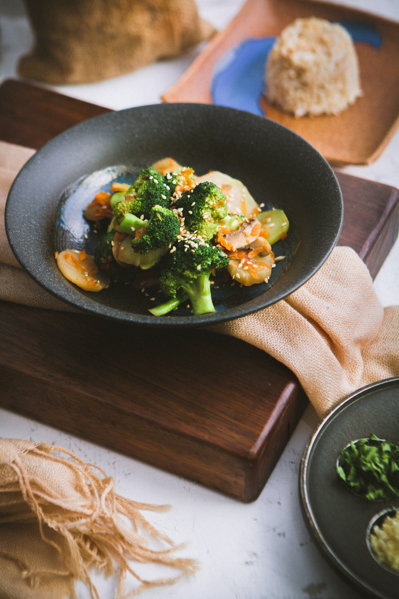

Receta de patatas Ensalada de brócoli .

1. Cocemos al vapor la coliflor y el brócoli en arbolitos durante
8-10 min. Podemos hacerlo con una cesta de vapor en una cazuela
al fuego o en una vaporera de microondas. Debe quedar al dente. Una vez
cocida la verdura la dejamos enfriar mientras escurre muy bien sobre un colador.
2. Pelamos y picamos a nuestro gusto el tomate y la cebolla.
Cocemos los huevo enteros en agua con sal por 10 min.
3. Montamos la ensalada con los arbolitos de coliflor y brócoli
cubiertos con el tomate picado, cebolleta, huevos duros troceados
y algunos lomos de atún o de caballa en aceite por encima, tiras de
zanahoria o de queso rallado… a tu gusto.
4. Aderezamos con una vinagreta de 3 partes de aceite de oliva virgen por
una de vinagre de Jerez, sal y pimienta negra molida.